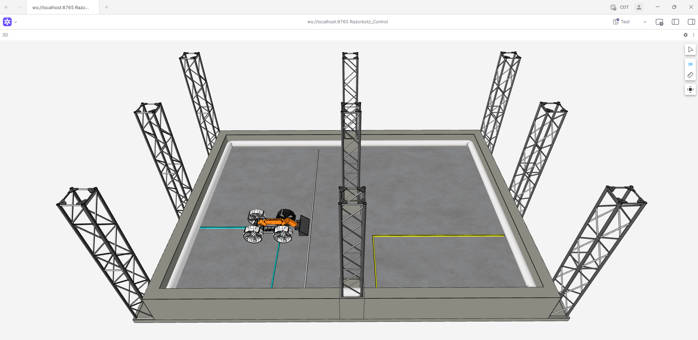
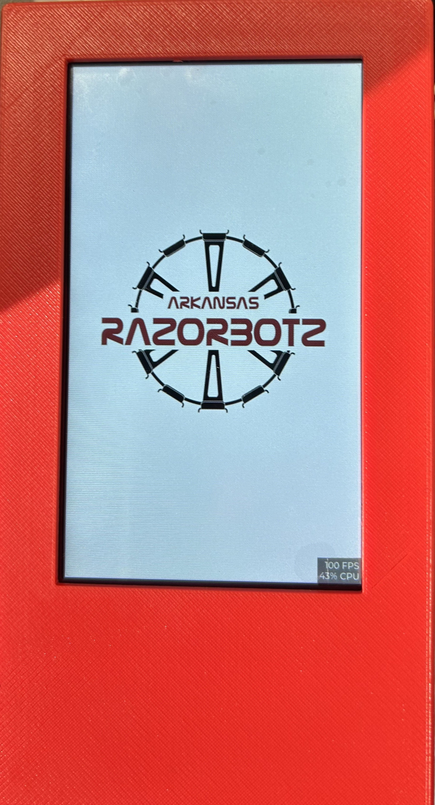
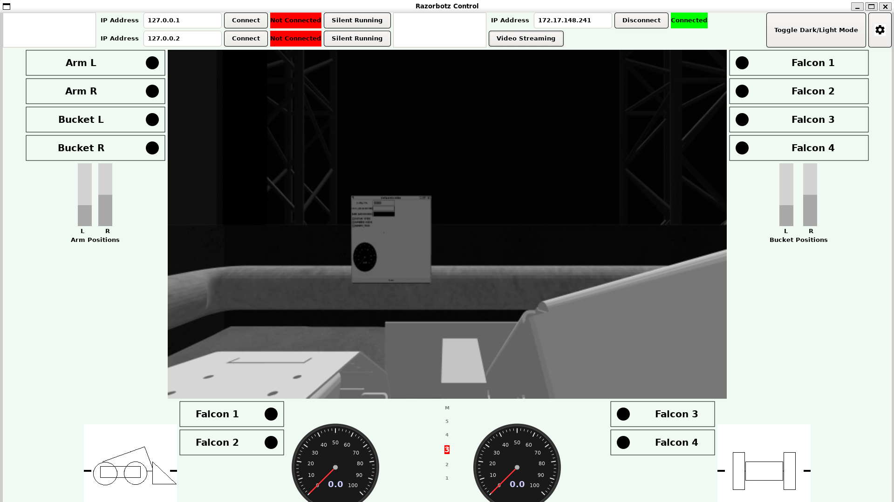
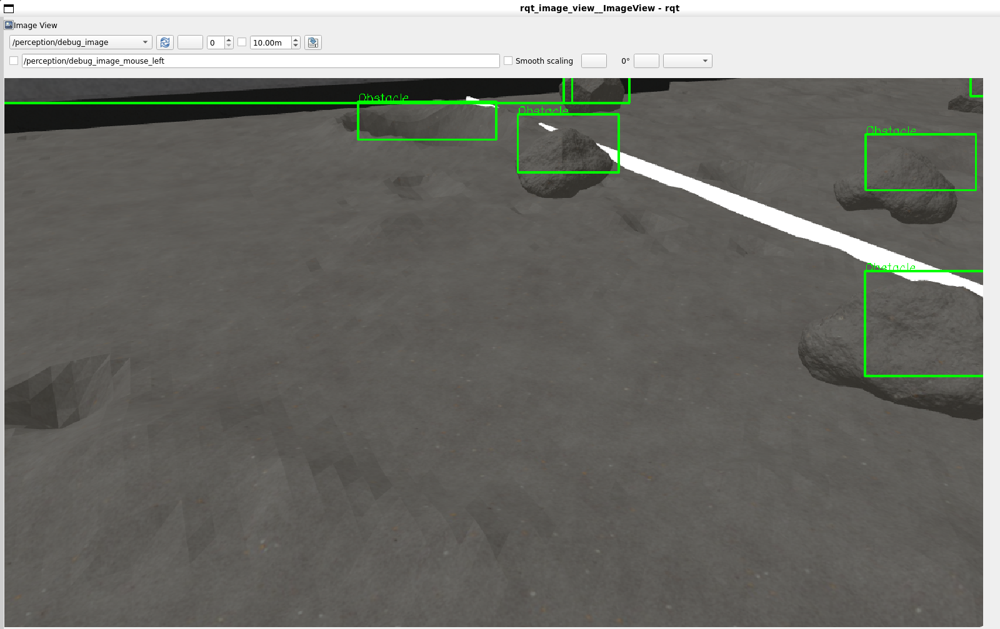
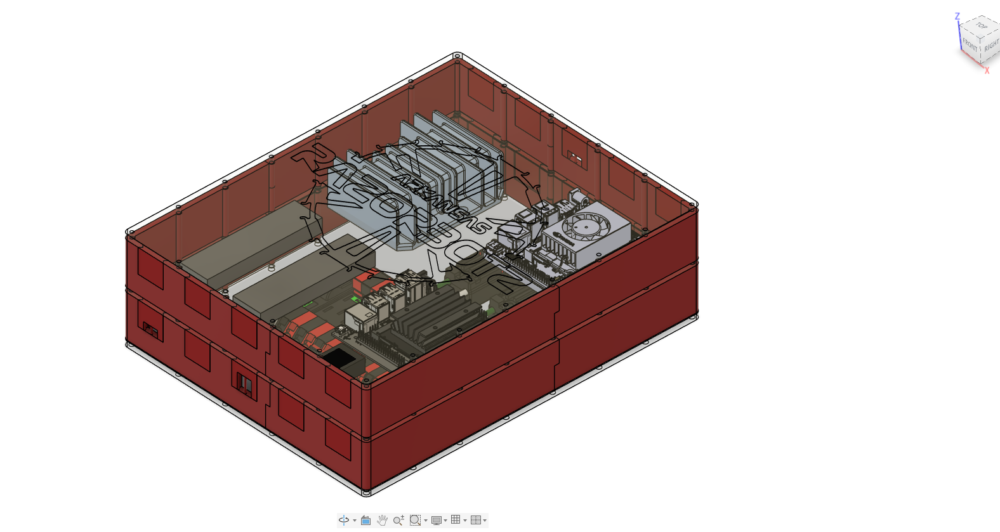
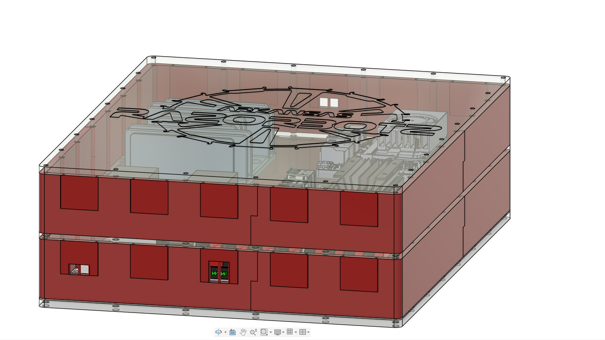

Systems Engineering | Robotics Infrastructure | Secure Communications | Simulation
Systems & Research
A selection of robotics systems, embedded platforms, operator tools, simulation workflows, and research projects spanning distributed autonomy, cyber-resilient communications, and real-world robotic integration.
My work focuses on building systems that are not only functional, but also reliable, observable, maintainable, and secure under real deployment constraints.
Distributed Robotics Systems

Distributed Autonomy / Secure Communications
AEGIS Communication Protocol
A resilient communication and failover architecture for dual-computer robotics platforms, designed to support rapid state synchronization, subsystem observability, and reliable control continuity.

Visualization / Digital Twin
Digital Twin Pipeline
A Foxglove and C++ Server-based visualization pipeline for representing robot state, arena context, and telemetry streams in a live digital twin workflow.
Operator Tooling & Telemetry

Field Diagnostics / Embedded Interface
Handheld Diagnostics Platform
A handheld CAN-bus diagnostics interface for motor testing, telemetry parsing, and subsystem validation during robot integration, troubleshooting, and field operations.

Desktop Operator Interface
Robotics Control GUI
A custom GTK-based operator interface integrating subsystem monitoring, control workflows, telemetry display, and networking tools into a unified robotics dashboard.
Simulation & Validation

Gazebo / Testing Infrastructure
Lunar Arena Simulation Stack
A Gazebo-based simulation environment used to validate robot motion, perception workflows, obstacle handling, and deployment logic before hardware testing.

Perception / Localization
Localization & Perception Pipeline
A set of robotics perception workflows combining camera data, ArUco tracking, obstacle detection, and validation tooling to support reliable spatial awareness on mobile platforms.
Embedded Systems & Hardware Integration

Hardware Interface / Diagnostics
Toggle-Switch Diagnostics Hardware
A physical hardware interface used to simplify diagnostic workflows, subsystem validation, and field-friendly testing for robot operators and developers.

Embedded Control / Motor Systems
CAN Motor Control & Integration
Embedded robotics work integrating CAN-connected motor controllers, telemetry parsing, firmware interfaces, and subsystem control logic for real hardware deployment.

Hardware Interface / Motor Systems
Electrical Box Design
Robotics work integrating CAD modelling to implement a modular, dust-proof design for harsh, lunar environment deployments

Hardware Interface / Motor Systems
Electrical Box Wiring
Robotics work integrating CAD modelling to implement a modular, dust-proof design for harsh, lunar environment deployments
Research & Publications
Cybersecurity / Software Assurance / Applied Systems Research
Publications, Presentations, and Security Research
My research includes software vulnerability detection, privacy and secure systems, and the evaluation of large language models for software assurance tasks. I have authored multiple publications and presented this work at two conferences.
This research directly informs my robotics work by shaping how I think about message integrity, cyber-resilient architectures, trustworthy automation, and robust distributed system behavior in deployed autonomous platforms.
Highlights
- • Multiple publications
- • Two conference presentations
- • LLM vulnerability detection research
- • Privacy and secure systems background